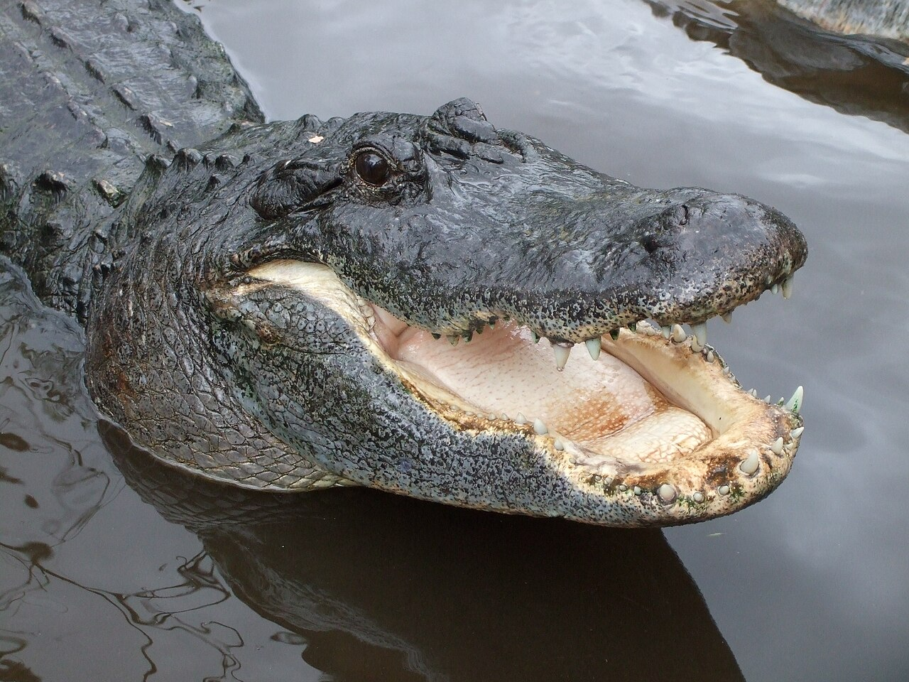

Bears
Bears are carnivoran mammals of the family Ursidae. They are classified
as caniforms, or doglike carnivorans. Although only eight species of
bears are extant, they are widespread, appearing in a wide variety of
habitats throughout most of the Northern Hemisphere and partially in the
Southern Hemisphere. Bears are found on the continents of North America,
South America, and Eurasia. Common characteristics of modern bears
include large bodies with stocky legs, long snouts, small rounded ears,
shaggy hair, plantigrade paws with five nonretractile claws, and short
tails.
Learn more about bears
here

Giraffes
The giraffe is a large African hoofed mammal belonging to the genus
Giraffa. It is the tallest living terrestrial animal and the largest
ruminant on Earth. Traditionally, giraffes have been thought of as one
species, Giraffa camelopardalis, with nine subspecies. Most recently,
researchers proposed dividing them into four extant species due to new
research into their mitochondrial and nuclear DNA, and individual
species can be distinguished by their fur coat patterns. Seven other
extinct species of Giraffa are known from the fossil record.
Learn more about giraffes
here

Lions
The lion (Panthera leo) is a large cat of the genus Panthera, native to
Africa and India. It has a muscular, broad-chested body; a short,
rounded head; round ears; and a dark, hairy tuft at the tip of its tail.
It is sexually dimorphic; adult male lions are larger than females and
have a prominent mane. It is a social species, forming groups called
prides. A lion's pride consists of a few adult males, related females,
and cubs. Groups of female lions usually hunt together, preying mostly
on medium-sized and large ungulates. The lion is an apex and keystone
predator; although some lions scavenge when opportunities occur and have
been known to hunt humans, lions typically do not actively seek out and
prey on humans.
Learn more about lions
here

Monkeys
Monkey is a common name that may refer to most mammals of the infraorder
Simiiformes, also known as simians. Traditionally, all animals in the
group now known as simians are counted as monkeys except the apes. Thus
monkeys, in that sense, constitute an incomplete paraphyletic grouping;
however, in the broader sense based on cladistics, apes (Hominoidea) are
also included, making the terms monkeys and simians synonyms in regard
to their scope.
Learn more about monkeys
here
- Cookie
- Earl
- Banana Pudding
Alligators
An alligator, or colloquially gator, is a large reptile in the genus
Alligator of the family Alligatoridae of the order Crocodilia. The two
extant species are the American alligator (A. mississippiensis) and the
Chinese alligator (A. sinensis). Additionally, several extinct species
of alligator are known from fossil remains. Alligators first appeared
during the late Eocene epoch about 37 million years ago.
Learn more about alligators
here
